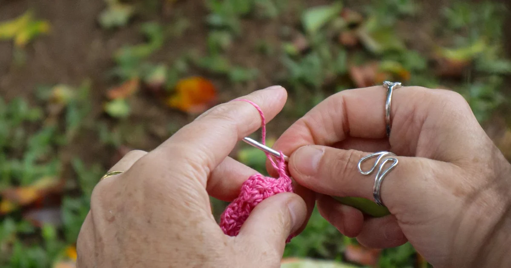
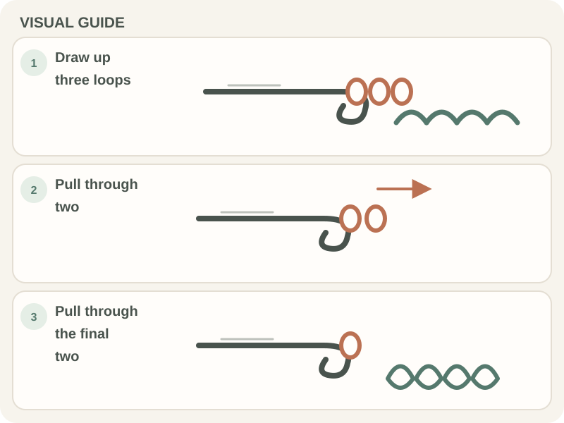

Stitches & Techniques · Beginner guide
How to Make a Double Crochet Stitch
Build a US double crochet with two pull-throughs after drawing up a loop.

A US double crochet (dc) is taller than single or half double crochet. Its height comes from the yarn-over before insertion and two separate pull-throughs.
Before you begin
Confirm the pattern uses US terms. In UK patterns, “dc” names a shorter stitch, so a US tutorial will not match those instructions.
Step-by-step instructions
- Yarn over once, insert the hook, yarn over, and pull up a loop. Three loops are on the hook.
- Yarn over and pull through the first two loops. Two remain.
- Yarn over again and pull through the remaining two loops. One active loop remains.
- Make the next stitch in the next indicated stitch, not the same point unless the pattern says to increase.

What to check
Separate the two pull-throughs
The post shows two stacked sections and the top forms a V. If only one pull-through stage was completed, the stitch may be too short.
Frequently asked questions
How many yarn overs happen before inserting?
One for a standard US double crochet. Later yarn overs complete the pull-throughs.
Why are my stitches different heights?
Check that both pull-through stages are complete and that you are not tightening the yarn unevenly.
Identify the double crochet stitch
For double crochet, use this as the starting rule: yarn over before insertion, draw up a loop, then complete two pull-throughs through pairs of loops. The stitch sequence and the pattern’s edge rules determine where the hook goes and what counts. Read the relevant instructions before beginning and keep them nearby as you work. If a general tutorial and the pattern give different directions, follow the pattern’s stated convention; another project may use a different method.
Complete the two pull-through stages
Before proceeding, confirm the turning chain and first/last stitch instructions. Write any project-specific choice in your notes so you can apply it consistently. If the pattern or label leaves the detail unclear, look for its own key or maker guidance rather than assuming that another project follows the same convention. This short check can prevent a small misunderstanding from affecting the rest of the work.
Keep the stitch height even
A practical way to apply double crochet: Work a short swatch and pause with three loops on the hook, then complete the two pairs. After a few stitches, pause and look at the loops before repeating the movement. Good light and smooth yarn can make the structure easier to see while you learn. If the sample does not match the pattern’s directions, undo the short section and repeat the step slowly; changing one movement at a time makes the cause easier to spot.
Follow the turning-chain instruction
A common mistake in double crochet is skipping a loop or pulling through all loops at once. Watch for this sign: stitch height or row count differs from the pattern. That can change the stitch count or leave a loop difficult to work into. Compare the recent work with the pattern and locate the first point where they differ. Correct that detail before continuing; stretching the fabric or adding an unplanned step can hide the cause without fixing it.
Count the top V after each stitch
If stitch height or row count differs from the pattern, first check the turning chain and first/last stitch instructions. Then compare the stitch sequence, insertion point, and edge count at the last correct row with what you actually have. Change one thing at a time so you can tell whether it addresses the problem. If the instructions and materials match but the result still differs, use the project’s gauge, sizing, substitution, or care notes as relevant; those are more useful than a universal fix.
Fix a missed loop or insertion
Remember: follow the two-stage finish and count the top Vs. Following the same insertion and pull-through sequence helps keep the stitch structure recognizable from one row to the next. If you choose an alternative, record it and compare a small sample or written step before applying the change across the project.
Practice a row of US double crochet
To make double crochet easier to repeat, use this sequence: pause with three loops on the hook, then complete the two pairs, inspect the result, and only then continue. At first, slow down at the point where the pattern changes direction, begins a new round, or starts a repeat. A removable marker or brief row note can hold your place while you learn the construction. Once the sequence is clear, you can work more steadily without guessing which loop or instruction comes next.
Conclusion: Double crochet
Keep this lesson in mind: follow the two-stage finish and count the top Vs. Carry the pattern’s stitch and edge rule into the next row. A standard US double crochet finishes by pulling through two loops twice. Check the top V afterward; that completed stitch is what you count.